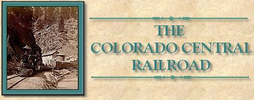

| The following is a description of a trip over the Colorado Central Railroad in 1885. The narrative comes from George Croffuts' "Grip Sack Guide to Colorado" published in 1885. This will give you an idea of what it was like to be there at the time. The article also contains a short history of the Colorado Central Railroad. I want to thank Rick Steele for providing it for me. |
|
COLORADO CENTRAL RAILROAD OR
"C. C." DIVISION, UNION PACIFIC RAILWAY |
| The "Central" was the first railroad corporation in Colorado, having been organized in 1865. In 1868, 10 miles of track had been constructed. In September, 1870, the broad gauge portion between Denver and Golden was finished, and in April of the same year work was begun on the division extending north to Longmont and west to Black Hawk, Central and Georgetown. The mountain portion of the "Central" is a three foot narrow gauge, commenced at the same time as the Longmont division, and completed September 1st, 1871, to the Forks, or the junction of North and South Clear creek, 13 miles from Golden, and in December following, up North Clear creek to Black Hawk, 36 miles from Denver. In March, 1873, the South Clear creek line was constructed to Floyd Hill, three and a half miles above the Forks and continued to Georgetown in the fall of 1876. In July, 1877, work was commenced on the extension from Longmont north and completed to a junction with the Union Pacific at Colorado Junction, six miles west of Cheyenne, in October of the same year, making the whole trackage of the "Central" 181 miles, of which 130 miles are of the broad and 54 miles narrow gauge. |
| All trains leave the Union depot, and there let us take the cars of the broad gauge for Golden, Boulder and Fort Collins. "ALL ABOARD," soon greets our ears and the train moves gently along towards the north, passing on the right the gas works, steam heating works, machine shops and other large manufacturing establishments, scattered over a space of half a mile to the bridge over the Platte river. Soon we commence to climb the rolling prairie, and two miles from Denver we pass Argo, on the right where are located the Boston and Colorado Smelting works Half a mile further we fly by Summit, a station only in name, where, had we the time, one of the most beautiful views of Denver and the surrounding country could be obtained. The city now lies to the southeast, embowered in shade trees, with scores of churches, private residences, large commercial buildings and extensive manufactories standing forth in marked prominence. To the south is the range of the "Plum Creek divide," beyond which, a little farther to the westward, can be seen Pike's peak, peaking up far above all other surroundings. The Platte river and valley are close in the eastern foreground, and to the right and left are the broad plains, limitless apparently to the eye, while in the western back ground are the Rocky mountains, the base of which is near, but the peaks and the range from north to south are only bounded by the horizon. |
| Proceeding a short distance further, the valley of Clear creek appears suddenly upon our vision. It is one of the most fertile as well as the most beautiful in the states. The soil is a rich, black loam, mixed with just enough fine sand to make it warm and quick to give life to cereals or roots. For the production of all kinds of vegetables, Clear Creek valley has no equal in Colorado. |
| Descending into the valley we cross the bridge over Clear creek and run along on its west bank to ARVADA, an unimportant side track, seven miles from Denver. Our course is now directly west toward the mountains, crossing Ralston creek and many irrigating canals — for be it known these lands have all to be irrigated to be certain of raising a good crop — to the base of the Table Mountains. |
| We are now passing over the site of the old town of Arapahoe, where placer mines were worked in 1859. It then had upwards of fifty buildings, none of which remain to mark the locality. |
| The Table mountains, the outposts or giant sentinels of the Rocky mountains, are 1,000 feet in height, nearly round, flat on top, well grassed, and at one time must have been one unbroken range enclosing a great basin above where is now the site of Golden. Clear creek must have been very busy for a great many years to have cut such a tremendous chasm as the one we are now entering. Rolling along past smelting, sampling and concentrating works, several manufactories, and the railroad company's machine shops, we reach GOLDEN, the "Lowell" of Colorado. Fifteen miles west from Denver, the road to the mountain cities, keeps directly west, up the famous Clear Creek cañon, (which will be our Tour Two) |
| [NOTE: We begin Tour two here] |
|
TOUR TWO.
Clear Creek Canon - ldaho Springs - Gray's Peak |
|
Colorado Central Division of the Union Pacific Railway
Mountain Division - Narrow Gauge |
| There are two passenger trains daily between Denver and the mountain cities, running narrow gauge cars, as the track is provided with a third rail. One train leaves in the morning and one in the afternoon. An observation car is run in the tourist season on all trains. Our route is substantially the same as in Tour One, until we arrive at Golden, where the train is divided into two sections, one going to Central and the other to Georgetown, running over the same track until they reach the forks of Clear creek, 13 miles from Golden. |
| Arriving at Golden the Georgetown train is the first to leave. While waiting, some one pointed to the mountains to indicate our direction and many were the conjectures and speculations as to the point of entering them, and the possibility of geting over or around the apparently impenetrable barriers. All were eager and every eye was on the alert. "ALL ABOARD" is heard and in the throng we noticed a little old man, who, from his appearance, was evidently a Irishman just from the "old sod." He had no idea what direction the train would go, and when it gently started directly for the high mountains, he thought surely something was wrong; a person running through the car confirmed his fear, and he rushed frantically up to the nearest passenger and asked excitedly: "Has the train got away?" "Does the guard know which way the thing is going ?" Presently the conductor — over 200 pounds of him — came along, and gave the assurance that "the thing" was going all right and that the train could easily get over the mountains, etc. The little old man was quieted, but we see could by his flashing eyes what he thought of the conductor; nothing but disparity in size and weight enabled the latter to reach the bosom of his family that night. Entering the mouth of the cañon, we follow the creek in its tortuous course — in places far above — and then on a level with its banks, beside perpendicular cliffs and beneath overhanging walls a thousand or more feet in height The whole scene changes with every revolution of the wheels, and to be sure not to miss any grand views, one must keep alert and watchful all the time. |
| CHIMNEY GULCH is passed three miles, and GUY GULCH in another three. Between these two gulches are many old placer claims, but little has been done in them since 1859 60, when this was a busy camp. Two miles further is BEAVER BROOK, the first stopping place so far on this route. Beaver brook, a small stream, comes in on the left, down a narrow cañon, up which six miles distant, is located a saw mill in a perfect forest of timber. The scenery at this point is grand; the mountains are fully 1,000 feet above the road, on either hand, and covered in places with a dense growth of young pine and spruce trees, presenting an appearance as wild, picturesque and romantic as one could wish. Leaving the station, our road makes a 30 degree curve to the right, up a grade of 272 feet to the mile under a projecting spur of the mountain, which rises 1,500 feet above our train, while the creek is close, and thundering along down its narrow, rocky bed. |
| The little old Irishman on the train, who had said nothing up to reaching this point, but had scanned the route with an eager eye, now excleimed, "The moll that picked out this route must have been a perfect divil wid wings !" |
| ELK CREEK, & Side track for passing trains, is reached one mile above Beaver brook, and we continue climbing up, up, between towering mountain cliffs, in places clothed with evergreen pine, cedar and spruce trees, with shrubs of various kinds, until we reach a point three miles above Elk creek, where the walls on the west side of the creek slope away, and our train rolls past BIG HILL. Here the old Mt. Vernon wagon road comes down the mountain from the left the grade of which, in places, is 34 to 100 feet. This road leaves the valley about two miles south of Golden, and after climbing the mountain via Mt. Vernon cañon, to an altitude of 8,000 feet, decends this "hill" and runs up the north branch of Clear creek to Black Hawk. Many of the mills and the machinery used in these mountains, in early days, before the railroad, were hauled over this road, and where the grades were the steepest, the wagons were eased down by ropes secured by a turn or two around huge pine trees beside the road, and at this time, the marks of the ropes are to be seen on the stumps where they had peeled the bark, so taut were the lines. We know — of our own personal knowledge where it took 10 men, besides their teams, nine days to lower down this "hill" one boiler, the weight of which was a little over seven tons. Those who grumble at railroad charges, please take notice: the wagon road is still there — try it. |
| FORKS CREEK, one mile further on, is the junction of the North and South Clear creek. Here the route for Georgetown turns to the left, across the bridge, while that for Black Hawk and Central keeps to the right. As we have always had a desire to do right, we will keep to the right awhile longer, and note the result. |
| From this point to Black Hawk, seven miles — and we might include that portion from Floyd Hill to Georgetown, on the south fork — nearly every foot of the creek bed has been dug over, time and again, by miners, in search of the yellow metal, gold. Dams, in many places, have turned the waters of the creek, through flumes, first on one side of its bed, then on the other, and the greater portion of the earth, from surface to bed rock, from one side of the gulch to the other, has been dug and washed over by white men, and when given up by them, has been "jumped" by the Chinese companies, many of whose people can now be seen daily, washing and working these old "placer diggings" over again. |
| COTTONWOOD, a milk ranch and side track station, is two miles above the Forks, and the same below SMITH HILL. Just at this station comes in the old wagon road, built in 1862; it is a branch of the Golden Gate road, alluded to in Tour One, which is built over the noted "Guy Hill," one of the most villianous in the mountains. Nearly opposite this station, Russell gulch comes down, up which are located the old placer mines, so noted in 1859. |
| Proceeding onward and upward, about one mile above the station, we pass, on the left, the old Excelsior and the Whipple mills, now abandoned, except as shelters for it few Chinese miners, who work along the creek. |
| By looking away up the mountain side on the left, westward, can be seen where the railroad track runs along, first to the south, then back to the north, gaining altitude at each turn, in order to overcome the heavy grade and allow our train to run into Central City. |
| We pass several quartz mills, across the creek on the west bank, and along the road on the right, are the site and ruins of the first reduction works of the Boston and Colorado companies, whose present works are located at Argo, as noted in our First Tour. Three miles above Smith hill is located BLACK HAWK, a city of about 2,000 population, all of whom are engaged in mining, directly or indirectly. |
| From Black Hawk the wagon road to Central City keeps up Gregory gulch, west through old Mountain city, past several quartz mills; distance one mile, but in a direct line by rail, it is four miles. |
| The railroad grade between Black Hawk and Central, a heavy one, was completed during the summer of 1878, See Post Roads, No 12. |
| Leaving Black Hawk, we start on our zigzag tour to Central, on the route above named. The ride is one of great interest. After proceeding half a mile up North Clear creek, our train stops, the switch is turned and back it goes, but not on the same track. It is climbing the world at a rapid rate; now it is directly over the city; then on the steep mountain side beyond; then, it thunders over high bridges that span deep, and fearful chasms, and stops at the end of two miles on the brink of a precipice 400 feet above the same road up which it came within the hour, quite near enough to reach with a sling and stone. Again forward and again climbing, the track runs parallel with the other two, but each far above the other. Soon the train rounds the mountain spur opposite Black Hawk, but 400 feet above, affording the passengers a. magnificent view of furnaces, stamp mills, and the railroad along which we come, and a grand view of B1ack Hawk and the surrounding mountains: it then bears away to the westward, heading off deep ravines or crossing them on high bridges over streets lined on each side with mills, stores and residences, the homes of the citizens. The views of scenery are most varied and surprising, the changes are rapid and wonderful as those of the kaleidoscope; yet, with all the scenic beauty of this western country, within the reach of all, many of our people never visit them, but sigh for a tour to foreign lands. |
| A few more revolutions of the wheels, and the train stops at the end of the road, at CENTRAL CITY, the county sent and chief town is Gilpin county. The mountains surrounding Central and Black Hawk — when gold was first discovered in them — were covered with a dense growth of pine and spruce trees, but they are about all cut off now, and the whole mountain top and sides, with the stumps and prospect holes, present a face — "pockmarked," we should say, were it a, child, beyond the recognition of its own mother. |
| See Central, Black Hawk, under list of Cities, Towns. etc., also Post Roads, Nos. 5, l2, 13, 14 and 136. |
| We will now return to the Forks, take the Georgetown train, cross the bridge, and follow up South Clear creek. Soon after leaving the station, our train arrives at a narrow gorge and a sharp curve in the road, where a huge spur of the mountain projects out. within 200 feet of its tall brother on the opposite side of the creek; and as the train passes under this over-hanging cliff, we enter one of the grandest natural ampltilhentres in the world. The mountain rises over 2,000 feet above the stream, which is here compressed to a rapid torrent, thundering at its very base. The space between the mountain cliffs is just sufficient for the creek and road; in many places the roadbed had to be blasted out of the mountain side. The scenery for the next two miles is unusually impressive. In places small pine and cedar trees can be seen in the gorges and crevices, which add additional beauty to the scene. |
| About three miles above the Junction the road curves to the right, opposite the base of Floyd hill, down which comes the old wagon road, from Bergens township to the south, and following up the west bank crosses the creek at FLOYD HILL STATION — three miles from the Forks. From this point up to Georgetown, 21 miles, the creek shows many evidences of "placer mining." and is one of the sections alluded to on a preceding page. |
| As we proceed the creek bottom widens and the mountains are not as high. Several old deserted mills are to be seen, and some-work in the placer diggings along the creek. Five miles brings us to IDAHO SPRINGS — 50 miles west of Golden, and 10 miles from Georgetown. The hot and cold mineral springs have made Idaho noted as a summer resort. |
| See Post Roads, No. 14, 13, |
| Leaving Idaho and continuing up the north side of the creek, we come to Trail run, which comes in from the south-west, up which are some good quartz mines and extensive forests of timber. Here is located the Freeland mills, and near by are the celebrated Freeland and Hukill lodes. FALL RIVER or Spanish bar is two miles above Idaho, where comes in from the north a small creek called Fall river, about eight miles in length, along which are located 1,000 quartz claims and several mills. Above Fall river, half a mile, Turkey run comes in from the south, where are found the Stephens mining properties and mill. A little further on we have Spring gulch, from the north, where is located some mills and valuable mines. DUMONT, once known as Mill City, is four miles above Fall river, at the mouth of Mill creek, which comes in from the north; up this creek are several valuable mines and mills. |
| At different points above Idaho are located mills mines, tunnels, and extensive mining improvements, which include some placer mining. Four miles above Dumont is Lawson's, at the base of Red Elephant mountain. Near by are many valuable quartz mines, the opening or "dump" of some of them being visible away up near the top of the mountain, marked by awhite deposit line, extending down towards the valley below. |
| EMPIRE, the station for Empire City is about one mile above Lawson's, but the city is lot in view, being about one mile to the westward up the north fork of Clear creek. The road over the range to the Middle park, via Berthoud pass, 11,850 feet, runs through Empire, and is one of the most beautiful mountain roads for variety of ever-changing panoramic views an enthusiast could desire. After crossing the North fork our course is south, running along the base of Republican mountain which rises above the road almost perpendicular, 1,250 feet, while on the east. Alpine mountain elevates its crest 2,000 feet high. On the sides of these mountains are shafts, tunnels, anti prospect holes in great numbers. Three miles further the Union Pass wagon road can be seen away up the side of the mountain to the right. It is built through a depression, between Douglas and Democrat mountains, and is bordered on one side going up and the other going down with tremendous precipices, affording a view from the summit of the valleys of Clear and Bear creeks with Georgetown and Empire in plain sight. |
| GEORGETOWN is reached in a run of five miles from Empire station — all the way between towering mountains close to each side. We are now 8,530 feet above the level of the sea, and at one of the principal silver mining cities in Colorado. The surrounding scenery is very grand, but we don't propose to describe it. Come and do it yourself. We are now distant from Denver 52 miles. There are a number of small towns and mining camps near Georgetown. Among the most prominent are Silver Plume, Brownsville and Silver Dale, from two to three miles distant. |
| For description see Cities, Towns, etc., also Gray's Peak, Graymont, Green Lake, Middle Park, Post Roads No. 20, etc. |
| Nearing the depot in Georgetown our train hugs the mountain close on the left and south of the city and turns up Clear creek directly for the end of the track at Graymont. The grade is heavy and the route tortuous. We are all expectation, as there seems to be only high mountains in front, with no opening for our little train. We cannot see the track for a dozen yards ahead, and just as our little old Irishman was saying "this is the devil's own road," our fiendish engineer dashes our train screeching into the "Devil's Gate." Some of our passengers dodged, many sniff the air inquiringly as to the temperature, others smiled but finally all rushed to the windows and stood as though transfixed in wonder and delight at the astonishing panorama passing rapidly before their eyes. We now discover a rail track high up on the side of the mountain to our left and another across the creek to the right — three parallel tracks, each far above the other, and in the near distance ahead a bridge spanning the stream. About the same time our engineer must have made the same discovery and resolved to run over all the tracks. The locomotive screeched most unmercifully, made for the bridge and started back towards Georgetown on the west side track. Suddenly it seemed to have changed its mind and at the same time its course, as another bridge is crossed. probably the "bridge of sighs," as it is directly over the "Bridal Veil," and away westward we rush again, apparently "climbing the world." All for a few minutes seemed fair ahead when suddenly, like the snapping of a whip, we are turned about and running toward Georgetown again. We are certain now our engineer has "lost his head," when, whisk, the whip snaps, around we go and are once more headed for the west. |
| SILVER PLUME two miles from Georgetown by wagon road, requires by rail four and a half miles. One mile further is Brownsville, two miles more to end of the track, — See Graymont. |
| This Tour is one of the most attractive and cheapest that can be made from Denver. Yet each has its own peculiar features, and none should be omitted. |
|
The Narrow Gauge Circle is written, maintained,and hosted by: Mark L. Evans Send Comments to:Mark L. Evans All original materials, text, and digital images Copyright © 1995-2010 Mark L. Evans. All rights reserved. Imitation is said to be the "sincerest" form of flattery.....Please don't flatter us without permission. |